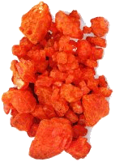

| Bichromate de
Potassium
Article by Edouard Bastarache
IDENTIFICATION:
Numéro CAS No.: 7778-50-9
Formule chimique: K2Cr2O7
Poids moléculaire: 294.18
PRINCIPAUX SYNONYMES:
Noms français:
Bichromate de potassium
Dichromate de potassium
Noms anglais:
Dichromic acid
Dipotassium salt
Potassium bichromate
Dipotassium dichromate
UTILISATIONS ET SOURCES D’ÉMISSION:
Fabrication de peintures, encres et en céramique.
I. Propriétés Physiques et Chimiques:
Aspect: Cristaux ou poudre rouge-orange
Odeur: Inodore.
Solubilité: 6.5% @ 10C (50F) dans l'eau.
Densité: 2.676 @ 25C/4C
pH: 4.04 (solution aq.de 1%), 3.57 (solution aq. de 10%)
% de volatiles par le volume @ 21C (70F): 0
Points d'ébullition: 500C (932F)
Point de fusion: 398C (748F)
II. Mesures de Lutte Contre l'Incendie:
A. Le feu:
Non combustible, mais cette substance est un oxydant fort et sa
chaleur de réaction aux agents réducteurs ou aux combustibles
peut causer l'allumage. Elle libère de l'oxygène lors
de sa décomposition, ce qui augmente la combustion.
B. Explosion:
Le contact avec les substances oxydables peut causer de la combustion
extrêmement violente.
C. Moyens pour éteindre le feu:
Inondez avec de grandes quantités d'eau. Un jet d'eau peut
être employé pour rafraîchir les récipients
exposés au feu. Ne laissez pas l'écoulement de l'eau
entrer dans les égouts ou les lignes d'eau.
D. Information spéciale:
En cas de feu, portez des vêtements complets de protection
et un appareil respiratoire approuvé avec masque plein visage
à pression à demande ou à tout autre mode de
pression positive.
PRÉVENTION:
I. Stabilité et Réactivité:
A. Stabilité:
Stable dans les conditions ordinaires d'utilisation et de stockage.
B. Produits dangereux de décomposition:
La combustion peut produire des oxydes de chrome.
C. Polymérisation dangereuse:
Ne se produira pas.
D. Incompatibilités:
Les agents réducteurs, l’acétone plus l’acide
sulfurique, le bore plus le silicium, l’éthylène-glycol,
le fer, l’hydrazine, et l’hydroxylamine. Tout matériel
combustible, organique ou autre aisément oxydable (papier,
bois, soufre, aluminium ou plastiques).
E. Conditions à éviter:
La chaleur, les substances incompatibles.
II. Manipulation et Stockage:
Protégez contre les dommages physiques. Entreposez dans un
endroit sec séparé des matériaux combustibles,
organiques ou autres aisément oxydables. Évitez le
stockage sur les planchers en bois. Enlevez et disposez de tous
les dichromates renversés; ne les remettez pas dans les récipients
originaux. Portez les équipements spéciaux de protection
lors des interventions d’urgence ou lorsque les expositions
peuvent excéder les normes établies. Lavez-vous les
mains, le visage, les avant-bras et le cou en sortant des secteurs
restreints. Prenez une douche et débarrassez-vous des survêtements,
mettez des vêtements propres en fin de journée. Évitez
la contamination croisée avec les vêtements de rue.
Lavez vos mains avant de manger et ne mangez pas, ne buvez pas,
et ne fumez pas sur les lieux de travail. Les récipients
ayant contenu de ce matériel peuvent être dangereux
si vides puisqu'ils retiennent des résidus du produit (poussière,
solides); observez tous les avertissements et précautions
énumérés pour le produit.
III. Mesures en cas de Déversement Accidentel:
Aérez la zone où est survenu la fuite ou le déversement.
Portez l’équipement approprié de protection.
Balayez et conteneurisez pour la récupération ou la
disposition. Le nettoyage à l’aspirateur ou le balayage
à l’humide peuvent être employés pour
éviter la dispersion de la poussière.
IV. Contrôle de l'Exposition/Protection Personnelle:
A. Système de ventilation:
Un système de ventilation locale et/ou générale
est recommandé pour garder l’exposition des travailleurs
au-dessous des limites d'exposition. La ventilation par aspiration
locale est généralement préférée
parce qu'elle peut contrôler les émissions du contaminant
à sa source, empêchant sa dispersion dans la zone générale
de travail. Si la limite d'exposition est dépassée
et que les contrôles technologiques ne sont pas faisables,
un masque demi visage pour particules peut être porté
pour les expositions atteignant dix fois la limite ou encore la
concentration maximale d'utilisation indiquée par l'organisme
de normalisation ou le fournisseur du respirateur, se basant sur
le chiffre le plus bas. Un masque plein visage pour particules,
peut être porté jusqu'à 50 fois la limite d'exposition,
ou la concentration maximale d'utilisation indiquée par l'organisme
de normalisation approprié, ou le fournisseur de respirateur,
se basant sur le chiffre le plus bas. Si des particules d'huile
(par exemple lubrifiants, fluides de coupe, glycérine, etc.)
sont présent, utilisez un masque de type R ou P de NIOSH.
Pour les urgences ou les cas où les niveaux d'exposition
ne sont pas connus, employez un masque autonome plein visage à
pression positive.
AVERTISSEMENT: Les masques pour la poussière ne protègent
pas les travailleurs en atmosphères pauvres en oxygène.
B. Protection cutané:
Portez des vêtements de protection imperméables, y
compris bottes, gants, manteau de laboratoire, tablier ou combinaison
appropriés pour empêcher le contact avec la peau.
C. Protection oculaire:
Utilisez des lunettes de sécurité pour produits chimiques
et/ou un protecteur facial complet en présence de poussières
ou d’éclaboussures de la solution. Maintenez une douche
oculaire et au corps entier sur les lieux de travail. .
V. Considérations quant à sa Disposition:
Ce qui ne peut être sauvé pour la récupération
ou pour le recyclage devrait être manipulé en tant
que déchet dangereux et être envoyé à
un endroit approuvé pour son traitement. Le traitement, l'utilisation
ou la contamination de ce produit peuvent changer les options de
gestion des déchets.
Observez les lois applicables lors de la disposition du contenant
et du contenu.
TOXICOLOGIE:
I. Toxicologie Expérimentale:
Rat DL50 (Oral): 25 mg/kg.
Lapin DL50 (Peau): 14 mg/kg.
II. Effets Aigus:
A. Inhalation:
Corrosif. Extrêmement destructif pour les tissus des membranes
muqueuses et de la région respiratoire supérieure.
Les symptômes peuvent inclure:
- mal de gorge
- toux
- souffle court
Les expositions plus élevées peuvent causer de l'oedème
pulmonaire.
B. Ingestion:
Corrosif. L'ingestion peut causer des brûlures graves de la
bouche, de la gorge, et de l'estomac, pouvant mener à la
mort. Elle peut causer des douleurs à la gorge, des vomissements
, de la diarrhée. Elle peut aussi causer de la gastroentérite
violente, un collapsus vasculaire périphérique, des
vertiges, une soif intense, des crampes musculaires, le choc, le
coma, des saignements anormaux, de la fièvre, du dommages
au foie et la défaillance rénale aigue.
C. Contact cutané:
Corrosif. Des symptômes de rougeur, de douleur, et de brûlure
grave peuvent se produire. Les poussières et solutions concentrées
peuvent causer de l'irritation grave. Le contact avec la peau lésée
peut causer des ulcères (ulcères de chrome), et l'absorption
qui peut causer l'empoisonnement systémique, affectant les
fonctions des reins et du foie. Ce produit peut être absorbé
par la peau ; les symptômes peuvent ressembler à ceux
causés par l'ingestion.
D. Contact oculaire:
Corrosif. Le contact peut causer de la vision embrouillée,
de la rougeur, de la douleur et des brûlures graves des tissus.
Il peut aussi causer du dommage cornéen et de la cécité.
III. Effets Chroniques:
L'exposition répétée ou prolongée peut
causer l'ulcération et la perforation du septum nasal, de
l'irritation respiratoire, des dommages au foie et aux reins; et
des ulcérations de la peau. Les ulcérations peuvent
être d'abord indolores, mais peuvent pénétrer
jusqu’à l'os produisant des "ulcères de
chrome."
IV. Aggravation de Conditions Préexistantes:
Les personnes souffrant de lésions préexistantes de
la peau, d'asthme, d’allergie ou de sensibilisation connue
à l'acide chromique ou aux chromates peuvent être plus
susceptibles aux effets de ce produit.
V. Grossesse:
A. Effets sur le développement:
Il a un effet embryotoxique et/ou foetotoxique chez l'animal.
Il traverse le placenta chez l'animal.
B. Effets sur la reproduction:
Il peut causer des effets aux les testicules des animaux.
C. Données sur le lait maternel:
Il n'y a aucune donnée au sujet de son excrétion ou
détection dans le lait maternel.
VI. Effets Cancérogènes:
Connu pour être un cancérogène humain.
VII. Effets Mutagéniques:
Effets mutagéniques démontrés chez l’animal
ou suspectés chez l'homme.
VIII. Sensibilisation:
Ce produit cause de la sensibilisation respiratoire et cutanée.
PREMIERS SOINS:
I. Inhalation:
Amenez la victime à l'air frais. Si elle ne respire plus,
donnez-lui la respiration artificielle. Si la respiration est difficile,
donnez de l'oxygène. Obtenez de l’aide médicale
immédiatement.
II. Ingestion:
Si avalé, N'INDUISEZ PAS LE VOMISSEMENT. Donnez de grandes
quantités d'eau. Ne donnez jamais rien par la bouche à
une personne inconsciente. Obtenez de l’aide médicale
immédiatement.
III. Peau:
Lavez abondamment la peau avec de l'eau pendant au moins 15 minutes
tout en enlevant les vêtements et les chaussures souillés.
Obtenez de l’aide médicale immédiatement. Lavez
les vêtements et nettoyez complètement les chaussures
avant leur réutilisation.
IV. Yeux:
Lavez abondamment les yeux avec de l'eau pendant au moins 15 minutes,
soulevant les paupières inférieures et supérieures
de temps en temps. . Obtenez de l’aide médicale immédiatement.
INFORMATION ÉCOLOGIQUE:
I. Sort Environnemental:
Une fois relâché, ce produit peut pénétrer
dans les eaux souterraines. Une fois introduit dans l'eau, on ne
s'attend pas à ce que ce matériau s'évapore
de manière significative. Ce produit peut se bio-accumuler
dans une certaine mesure. Une fois relâché dans l'air,
ce matériau peut être retiré de l'atmosphère
jusqu'à un degré modéré par déposition
humide.
II. Toxicité Environnementale:
Aucune information n'a été trouvée.
LIMITE D’EXPOSITION AU QUÉBEC:
Valeur d'Exposition Moyenne Pondérée (VEMP):
0,05 mg/m³ (exprimé en Cr.)
Références:
1. Chemical Hazards of the Workplace, Proctor & Hughes, 4e édition.
2. Clinical Environmental Health and Toxic Exposures, Sullivan &
Krieger; 2e édition.
3. CSST-Québec, Répertoire Toxicologique.
4. J.T. Baker, MSDS, Potassium Dichromate
5. Occupational Medicine, Zenz C., 3e édition.
6. Sax’s Dangerous Properties of Industrial Materials, Lewis
C., 10e édition.
7. Toxicologie Industrielle et Intoxications Professionnelles, Lauwerys
R.R., 4e édition.
Edouard Bastarache M.D. (Occupational & Environmental Medicine)
edouardb@sorel-tracy.qc.ca
http://sorel-tracy.qc.ca/~edouardb/
More Articles
|